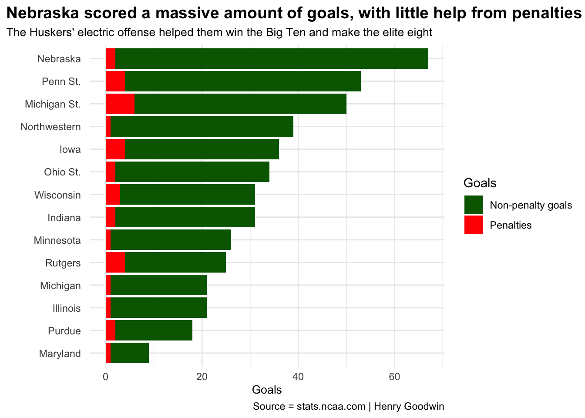
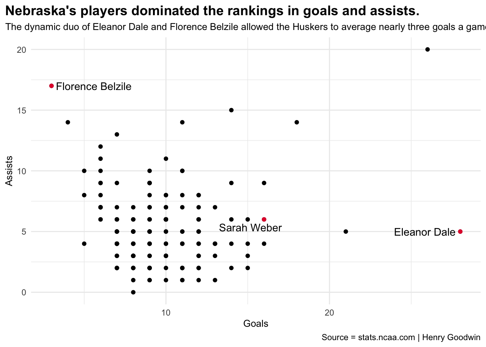
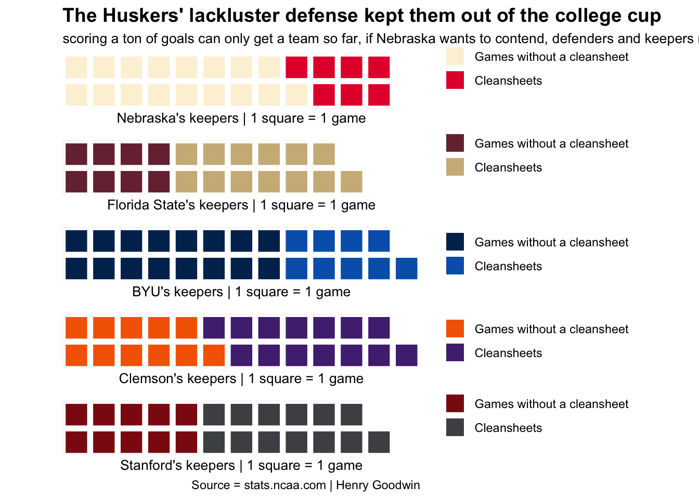

The Husker women’s soccer season was capped off by an electric offense followed by a subpar defense
code
soccer
nebraska
Author
Henry Goodwin
Published
December 1, 2023
Nebraska just wrapped up a fantastic season with a trip to the Elite Eight and a shared Big Ten regular-season championship. This makes it the third time the Huskers have made a quarterfinal appearance and was the first time they’ve done so since 1999. The team was spearheaded by one of the best-scoring offenses in the nation, slotting home 67 goals through 24 games. To put that into perspective, if you combine the goals scored by the Huskers in the two previous seasons, you get a total of 61 goals. Nebraska outscored their two previous seasons combined by six goals. So Nebraska had a great season, but how did they fare in their conference when it came to goals scored? How many of those goals were penalties?
Code
library(tidyverse)library(ggalt)library(ggtext)library(patchwork)library(ggtext)library(ggrepel)library(waffle)goaldiff<-read_csv("Goal_Differential.csv") |>select(-Rank)pensscored <-read_csv("Penalties_Scored.csv") |>select(-Rank)goals <- goaldiff |>inner_join(pensscored)fixedgoals <- goals |>separate(Team, into=c("Team", "Conference"), sep="\\(") |>mutate(Conference=gsub(")", "", Conference))biggoals <- fixedgoals |>filter(Conference =="Big Ten") |>mutate(nonpkgoal = Goals-PS) |>select(Team, PS, nonpkgoal)biggoalswide<- biggoals |>pivot_longer(cols=-Team,names_to="Type",values_to="Goal")ggplot()+geom_bar(data=biggoalswide, aes(x=reorder(Team, Goal), weight=Goal, fill=Type)) +scale_fill_manual(values=c("darkgreen","red"), name="Goals", labels=c("Non-penalty goals","Penalties")) +coord_flip() +labs(title ="Nebraska scored a massive amount of goals, with little help from penalties",subtitle ="The Huskers' electric offense helped them win the Big Ten and make the elite eight",caption ="Source = stats.ncaa.com | Henry Goodwin",x="",y="Goals" ) +theme_minimal()+theme(plot.title =element_text(size =14, face ="bold"),plot.subtitle =element_text(size =10),axis.title =element_text(size =10), plot.title.position ="plot")

Nebraska doesn’t get many penalties, but neither does the rest of the Big Ten. Maybe players don’t go down in the box as much, or refs just don’t feel inclined to call them out. Either way, the NCAA doesn’t track stuff like that, so without going to the film room there’s no way to know. One thing you can see, however, is that Michigan State scored the most penalties in the conference, and that’s who we share our regular season title with. Breaking it down further, if you look past the team statistics, there will be reoccurring names on the stat sheet for Nebraska. Eleanor Dale, Florence Belzile, and Sarah Weber were all nightmares for defenders and goalkeepers this season. Eleanor Dale had a phenomenal year, leading the nation in goals scored and breaking the school record for goals scored in a season. If there was a Golden Boot awarded in collegiate women’s soccer, Eleanor Dale would have it on lock this season.
Code
goalastleaders <-read_csv("Point_Leaders.csv")fixedleaders <- goalastleaders |>separate(Player, into=c("Player", "Team"), sep=",") |>separate(Team, into=c("Team", "Conference"), sep="\\(") |>mutate(Conference=gsub(")", "", Conference))nu <- fixedleaders |>filter(str_trim(Team) =="Nebraska")ggplot() +geom_point(data=fixedleaders, aes(x=Goals, y=Assists)) +geom_point(data=nu, aes(x=Goals, y=Assists),color="#E41C38") +geom_text_repel(data=nu, aes(x=Goals, y=Assists, label=Player)) +labs(title ="Nebraska's players dominated the rankings in goals and assists.",subtitle ="The dynamic duo of Eleanor Dale and Florence Belzile allowed the Huskers to average nearly three goals a game.",caption ="Source = stats.ncaa.com | Henry Goodwin",x="Goals",y="Assists" ) +theme_minimal()+theme(plot.title =element_text(size =14, face ="bold"),plot.subtitle =element_text(size =10),axis.title =element_text(size =10), plot.title.position ="plot")

Nebraska’s top players are mostly outliers on a list of great players. To be on the list, players had to average at least one point a game. Points are decided by the number of goals and assists a player has. One goal = 2 points, one assist = 1 point. So, if Nebraska’s offense was so good, why didn’t they make it to the college cup? Well, even if a team looks solid, upsets happen right? Well, not in Nebraska’s case. Nebraska had one weak spot, and it was their defense. Nebraska was ranked 151st when it came to average goals allowed. Unfortunately, the NCAA doesn’t keep defensive actions as statistics so clean sheets are about the only measurement of a team’s defensive performance one can get. Nebraska was one win short of making the college cup, and if they want to be a team that can contend for championships, not allowing goals needs to be a priority.
Code
shutout <-read_csv("Team_Shutout.csv")fixedshut <- shutout |>separate(Team, into=c("Team", "Conference"), sep="\\(") |>mutate(Conference=gsub(")", "", Conference)) |>mutate(nonshutouts =`Team Games`-Shutouts)nushut <-c("Games without a cleansheet"=17, "Cleansheets"=7,1)fsu <-c("Games without a cleansheet"=8, "Cleansheets"=13,4)byu <-c("Games without a cleansheet"=16, "Cleansheets"=9)clem <-c("Games without a cleansheet"=11, "Cleansheets"=14)stan <-c("Games without a cleansheet"=10, "Cleansheets"=13,2)iron(waffle(nushut,rows=2,xlab="Nebraska's keepers | 1 square = 1 game",colors =c("#FDF2D9", "#E41C38", "white")) +labs(title ="The Huskers' lackluster defense kept them out of the college cup",subtitle ="scoring a ton of goals can only get a team so far, if Nebraska wants to contend, defenders and keepers need to step up.") +theme(plot.title =element_text(size =14, face ="bold"),plot.subtitle =element_text(size =10),axis.title =element_text(size =10), plot.title.position ="plot"),waffle(fsu,rows=2,xlab="Florida State's keepers | 1 square = 1 game",colors =c("#782F40", "#CEB888", "white")),waffle(byu,rows=2,xlab="BYU's keepers | 1 square = 1 game",colors =c("#002E5D", "#0062B8")),waffle(clem,rows=2,xlab="Clemson's keepers | 1 square = 1 game",colors =c("#F56600", "#522D80")),waffle(stan,rows=2,xlab="Stanford's keepers | 1 square = 1 game",colors =c("#8C1515", "#4D4F53", "white"))+labs(caption ="Source = stats.ncaa.com | Henry Goodwin" ))

Nebraska had a phenomenal season led by Eleanor Dale’s record-breaking 28 goals. By all metrics, this season was a huge improvement from previous seasons and John Walker has a lot to be proud of. It’s no surprise he was named Big Ten Coach of the Year. However, if Nebraska wants any chance of being a title contender, they need to tighten up on defense.